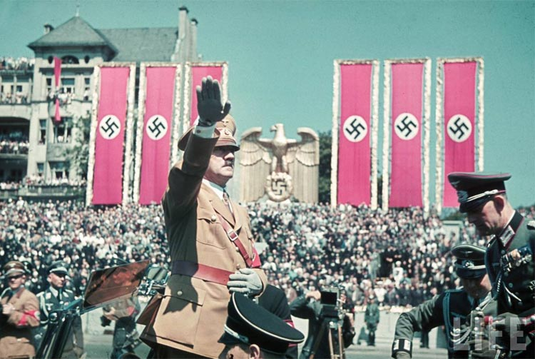
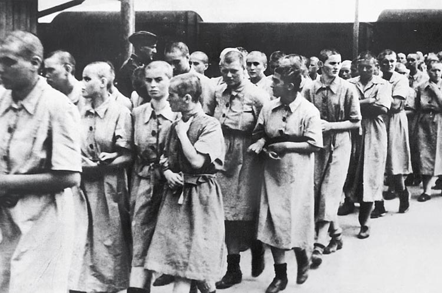

几年前“不朽的经典”——奔驰发布了一个视频广告，看到者无不喜极而泣、奔走相告，视频在youtube上几乎被点爆，甚至引起了德国的骚动。80秒的视频中，一辆新款奔驰汽车将一个小男孩故意碾死，然后打出这样一句广告词："尽早分辩出危险，以免追悔莫及!"是什么让一贯冷静、理智的奔驰车发了飙，竟将一个天真可爱的孩子碾死，视频最终的定格画面或许能解答这个问题——被碾男孩身体竟然是纳粹的十字的造型！刚刚泛起的一点同情心瞬间消散，原来这个男孩是少年时代的希特勒……
希特勒是奥地利裔德国人，政治家、军事家，德意志第三帝国元首、总理，纳粹党党魁，他的这些看似荣耀的标签给整个世界带来了空前的浩劫。
他积极宣扬法西斯主义、极端民族主义、反共产主义、反资本主义、反犹主义，改组并建立国家社会主义工人党（即纳粹党）。成为德意志第三帝国元首后，积极扩军备战，并于1939年指挥德军入侵波兰，直接导致了第二次世界大战的爆发。期间他犯下了罄竹难书的罪行，尤其是迫害、屠杀六百万犹太人。
怀抱着对极端民族主义、法西斯主义等政治论点极度的热情，希特勒浩浩荡荡的开动了纳粹这辆黄金列车，所到之处建立起各种“生化工厂”——集中营。二战期间，纳粹德国为镇压异己和推行种族主义政策，在国内和被占领国共修建了1000多座集中营，奥斯维辛集中营是其中最灭绝人性的一座——纳粹士兵露出狰狞的微笑，说着“欢迎到达奥斯维辛站，请脱光您的衣服，准备享受美好的人生……”
奥斯维辛是一个充满着血腥、暴戾与杀戮的词汇，是人性泯灭到极致、道德沦丧到极致的标志。纳粹德国在这个地方残忍血腥的虐待甚至杀害了无数的犹太人，毫无人权可言的犹太人在这个地方受尽屈辱后死去。
1945年1月27日，苏联红军解放了奥斯威辛集中营。为铭记奥斯威辛集中营的惨痛教训、记录人类历史上最黑暗的一页，德国、英国和意大利等许多国家都将这一天定为大屠杀遇难者纪念日。2005年11月1日，第60届联大全体会议一致通过了由104个国家共同提交的一项决议草案，决定将每年的1月27日定为“国际大屠杀纪念日”。
1、每年的1月27日是国际大屠杀纪念日，这个节日为了纪念二战中在奥斯维辛集中营被杀害的人而设立；
2、和平是人类社会永恒的主题，杀戮永远都应该遭到谴责。